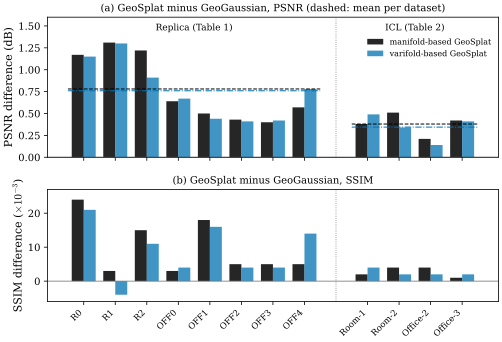
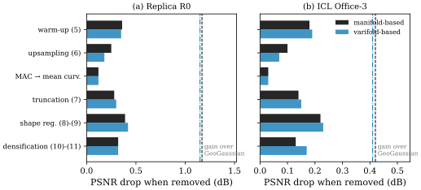

49.6 Experiments: Tables and Figures
Goals
- 논문의 세 표와 일곱 그림이 각각 무엇을 재고 무엇을 보여 주는지, 어느 칸에서 GeoSplat이 이기지 못하는지 말할 수 있다.
- PSNR의 dB 차이를 오차 제곱의 비로 바꾸고, 논문의 백분율 주장을 표의 숫자로 다시 계산할 수 있다.
- ablation 표가 보여 주는 것과 보여 주지 못하는 것(더하기, 빠진 비교)을 구별할 수 있다.
- MAC threshold \(\xi_{\min} = 0.001\)이 잡음과 장면의 단위에 따라 어떻게 달라지는지 작은 합성 장면으로 설명할 수 있다.
Prerequisites
- GeoSplat의 여섯 구성요소와 그 식(Section 49.3). ablation의 각 행이 이 식들 가운데 하나를 뺀 것이다.
- 두 estimator(Section 49.4, Section 49.5). 표의 “manifold-based”와 “varifold-based”가 이 둘이다.
- 3DGS의 학습과 densification(Section 29.5).
Motivation
앞의 세 절에서 GeoSplat의 식을 하나씩 따졌다. 몇몇 식에는 부호나 축척의 문제가 있었다. 그래도 실제 구현이 잘 동작한다면 그 문제들은 인쇄의 문제일 수 있다. 이것을 판단할 근거는 실험뿐이다. 그런데 논문의 실험은 기하를 직접 재지 않는다. 추정한 normal이나 curvature의 정확도, 복원한 surface의 품질은 보고되지 않고, 렌더링한 이미지의 품질(PSNR, SSIM, LPIPS)만 보고된다. 그래서 이 절의 질문은 두 가지다. 표와 그림이 실제로 무엇을 보여 주는가, 그리고 그것이 앞 절의 기하적 주장들을 얼마나 뒷받침하는가.
논문의 그림은 캡처하지 않는다. 그림은 축, 색, 보이는 수치를 글로 설명하고, 표의 숫자는 출처를 밝혀 그대로 옮긴다. 우리 그림 셋은 표의 숫자를 다시 그린 것 둘(Figure 49.6.1, Figure 49.6.2)과 합성 장면에서 직접 계산한 것 하나(Figure 49.6.3)다.
Setup (App. F.1)
과제는 novel view synthesis, 곧 학습에 쓰지 않은 카메라 위치에서 렌더링한 이미지를 실제 이미지와 비교하는 것이다. 부록 F.1이 밝힌 설정을 표로 모으면 다음과 같다.
| item | value |
|---|---|
| datasets | Replica (Straub et al. 2019) [Straub19] 8 scenes (room0–2 = R0–R2, office0–4 = OFF0–OFF4), ICL-NUIM (Handa et al. 2014, ICRA) [Handa14] 4 scenes (Room-1, Room-2, Office-2, Office-3); 12 scenes, all indoor |
| train/test split | that of GeoGaussian (ratio not stated) |
| initialization | positions from SfM (COLMAP); covariance by (49.3.1)–(49.3.3); flat areas upsampled by (49.3.5) |
| thresholds | \(\xi_{\min} = 0.001\), \(\xi_{\max} = \xi_{\text{mean}} + 3\xi_{\text{std}}\) (mean and standard deviation of all estimated curvatures) |
| upsampling | \(\operatorname{KNN}\) with \(10\) neighbours |
| projections | \(\mathbf{v}^\top = \inner{\mathbf{u}^i_1}{\mathbf{v}}\mathbf{u}^i_1 + \inner{\mathbf{u}^i_2}{\mathbf{v}}\mathbf{u}^i_2\), \(\mathbf{v}^\perp = \inner{\tilde{\mathbf{u}}^i_3}{\mathbf{v}}\tilde{\mathbf{u}}^i_3\) |
| loss | the original 3DGS loss (the paper: “e.g., D-SSIM”) \(+\ \mathcal{L}_{\text{scale}} + \mathcal{L}_{\text{rot}}\); weights not stated |
| estimators | manifold: \(\Delta\) by the kernel (49.5.11) or (49.5.12) (paper (46), (47)); varifold: Proposition 49.4.4 (paper (12)); re-estimated at evenly spaced iterations |
| hardware | 3 NVIDIA Tesla V100 |
| statistics | “improvements are significant with \(p \lt 0.05\) under t-test” |
| baseline numbers | copied from the GeoGaussian paper |
보고되지 않은 것도 많다. kernel의 scale \(t\)와 \(\varepsilon\), kernel \(\chi, \Upsilon\), weight \(m_j\), estimator의 이웃 수, 학습 iteration 수, learning rate, densification 일정, 재추정 간격, 최종 Gaussian 수, 학습 시간과 메모리, 그리고 코드의 공개 여부다. 이것들은 논문에 적혀 있지 않다. 3DGS 자체의 손실은 \(\ell_1\)과 D-SSIM의 가중합이다 [Kerbl23]. 표의 projection은 Table 49.1.1의 \(\mathbf{v}^\top = \tilde{\mathbf{V}}^i\mathbf{v}\)와 같다. \(\mathbf{u}^i_1, \mathbf{u}^i_2, \tilde{\mathbf{u}}^i_3\)가 orthonormal basis이면 \(\mathbf{v}^\top + \mathbf{v}^\perp = \mathbf{v}\)다.
Baselines
비교 대상은 여섯이다. 표마다 쓰인 것이 다르다.
- 3DGS(Kerbl et al. 2023) [Kerbl23]: 기본 Gaussian Splatting. ICL 표(Table 2)와 Figure 1에만 있다.
- LightGS(Fan et al. 2024, NeurIPS) [Fan24]: 기여가 작은 Gaussian을 지우고 다시 미세조정해 3DGS를 압축한 것. Table 2와 Figure 1에만 있다.
- GeoGaussian(Li et al. 2025, ECCV) [Li25]: normal 같은 first order prior로 co-planar 제약을 거는 3DGS. 논문이 “핵심 기준선”이라 부르고, 다른 기하 regularization 연구 대부분을 포괄한다고 쓴다. 모든 표에 있다.
- Gaussian-Splatting SLAM(Matsuki et al. 2024, CVPR) [Matsuki24], Point-SLAM(Sandström et al. 2023, ICCV) [Sandstrom23], Vox-Fusion(Yang et al. 2022, ISMAR) [Yang22]: 카메라 위치 추정과 지도 작성을 함께 하는 SLAM 시스템. Replica 표(Table 1)에만 있다.
- SAGS(Ververas et al. 2025) [Ververas25]는 표의 한 행으로만 나온다. MAC 대신 mean curvature로 평평한 곳을 고르는 변형(Table 3)이다.
논문은 “공정한 비교를 위해” 기준선의 숫자를 GeoGaussian 논문에서 그대로 가져왔다고 밝힌다 [GeoSplat25, App. F.1]. 곧 기준선은 이 논문의 저자가 같은 하드웨어와 같은 코드에서 다시 돌린 것이 아니다.
Metrics
세 지표 모두 렌더링한 이미지 \(\hat I\)와 실제 이미지 \(I\)를 비교한다. 화소 값이 \([0, 1]\)이면 PSNR(peak signal-to-noise ratio)은
이다. 단위는 dB이고 높을수록 좋다. PSNR이 \(g\) dB 오르면 오차 제곱은
배가 된다. \(1\) dB이면 약 \(21\%\), \(0.5\) dB이면 약 \(11\%\) 준다. 표의 PSNR은 test 이미지마다 계산한 값의 평균이므로 (49.6.2)는 이미지 하나에 대해 정확하고 평균에 대해서는 근사다. SSIM(structural similarity) [Wang04]은 작은 창마다 밝기, 대비, 구조의 상관을 비교해 평균한 값이고 \(1\)이 같은 이미지다. LPIPS(learned perceptual image patch similarity) [Zhang18]는 미리 학습한 신경망(논문은 VGG를 예로 든다)의 특징 사이 거리이고 낮을수록 좋다. 세 지표 모두 이미지에 대한 것이다. Gaussian의 위치, normal, curvature가 맞는지는 직접 재지 않는다.
Main Results (§5.1, Tables 1–2)
Replica의 결과가 [GeoSplat25, Table 1]이다. 논문의 표는 행이 방법(6개 \(\times\) 지표 3개), 열이 장면(8개)이다. 좁은 화면을 위해 이 장의 표는 장면을 넷씩 두 묶음으로 나누고, 묶음마다 지표별로 행을 모았으며, GeoSplat의 두 판을 위에 두었다. 행의 약어는 Vox = Vox-Fusion, P-SLAM = Point-SLAM, GS-SLAM = Gaussian-Splatting SLAM, GeoG. = GeoGaussian, Man. = manifold-based GeoSplat, Var. = varifold-based GeoSplat이다.
| PSNR ↑ | R0 | R1 | R2 | OFF0 |
|---|---|---|---|---|
| Man. | 36.37 | 39.55 | 40.36 | 43.38 |
| Var. | 36.35 | 39.54 | 40.05 | 43.41 |
| GeoG. | 35.20 | 38.24 | 39.14 | 42.74 |
| GS-SLAM | 34.83 | 36.43 | 37.49 | 39.95 |
| P-SLAM | 32.40 | 34.08 | 35.50 | 38.26 |
| Vox | 22.39 | 22.36 | 23.92 | 27.79 |
| SSIM ↑ | R0 | R1 | R2 | OFF0 |
| Man. | 0.976 | 0.982 | 0.985 | 0.984 |
| Var. | 0.973 | 0.975 | 0.981 | 0.985 |
| GeoG. | 0.952 | 0.979 | 0.970 | 0.981 |
| GS-SLAM | 0.954 | 0.959 | 0.965 | 0.971 |
| P-SLAM | 0.974 | 0.977 | 0.982 | 0.983 |
| Vox | 0.683 | 0.751 | 0.798 | 0.857 |
| LPIPS ↓ | R0 | R1 | R2 | OFF0 |
| Man. | 0.024 | 0.018 | 0.021 | 0.015 |
| Var. | 0.025 | 0.019 | 0.022 | 0.013 |
| GeoG. | 0.029 | 0.021 | 0.024 | 0.016 |
| GS-SLAM | 0.068 | 0.076 | 0.070 | 0.072 |
| P-SLAM | 0.113 | 0.116 | 0.111 | 0.100 |
| Vox | 0.303 | 0.269 | 0.234 | 0.241 |
| PSNR ↑ | OFF1 | OFF2 | OFF3 | OFF4 |
| Man. | 42.70 | 37.74 | 37.06 | 39.31 |
| Var. | 42.64 | 37.72 | 37.08 | 39.52 |
| GeoG. | 42.20 | 37.31 | 36.66 | 38.74 |
| GS-SLAM | 42.09 | 36.24 | 36.70 | 36.07 |
| P-SLAM | 39.16 | 33.99 | 33.48 | 33.49 |
| Vox | 29.83 | 20.33 | 23.47 | 25.21 |
| SSIM ↑ | OFF1 | OFF2 | OFF3 | OFF4 |
| Man. | 0.988 | 0.975 | 0.969 | 0.972 |
| Var. | 0.986 | 0.974 | 0.968 | 0.981 |
| GeoG. | 0.970 | 0.970 | 0.964 | 0.967 |
| GS-SLAM | 0.977 | 0.964 | 0.963 | 0.957 |
| P-SLAM | 0.986 | 0.960 | 0.960 | 0.979 |
| Vox | 0.876 | 0.794 | 0.803 | 0.847 |
| LPIPS ↓ | OFF1 | OFF2 | OFF3 | OFF4 |
| Man. | 0.037 | 0.027 | 0.027 | 0.028 |
| Var. | 0.971† | 0.028 | 0.028 | 0.027 |
| GeoG. | 0.040 | 0.029 | 0.029 | 0.031 |
| GS-SLAM | 0.055 | 0.078 | 0.065 | 0.099 |
| P-SLAM | 0.118 | 0.156 | 0.132 | 0.142 |
| Vox | 0.184 | 0.243 | 0.213 | 0.199 |
PSNR과 SSIM은 높을수록, LPIPS는 낮을수록 좋다. 굵은 글씨는 논문이 표시한 열별 최고이고, 모두 GeoSplat의 두 판 가운데 하나다(우리가 다시 확인했다). 숫자를 읽어 보자.
- PSNR: 두 판 모두 8개 장면 전부에서 모든 기준선보다 높다. GeoGaussian보다 manifold 판이 \(+1.17\), \(+1.31\), \(+1.22\), \(+0.64\), \(+0.50\), \(+0.43\), \(+0.40\), \(+0.57\) dB(평균 \(+0.78\)), varifold 판이 \(+1.15\), \(+1.30\), \(+0.91\), \(+0.67\), \(+0.44\), \(+0.41\), \(+0.42\), \(+0.78\) dB(평균 \(+0.76\)) 높다. room 장면(R0–R2)에서 이득이 office 장면보다 크다.
- SSIM: 여기서는 GeoSplat이 이기지 못한 칸이 있다. varifold 판은 R0(\(0.973 \lt 0.974\), Point-SLAM), R1(\(0.975 \lt 0.979\), GeoGaussian, Point-SLAM \(0.977\)에도 진다), R2(\(0.981 \lt 0.982\), Point-SLAM)에서 지고, OFF1에서 Point-SLAM과 같다(\(0.986\)). manifold 판은 OFF4에서 Point-SLAM에 진다(\(0.972 \lt 0.979\)). 열마다 두 판 가운데 하나는 최고이므로 굵은 글씨에는 드러나지 않는다.
- LPIPS: varifold 판의 OFF1 값 \(0.971\)(†)은 다른 칸(\(0.013\)–\(0.040\))과 자릿수가 다르다. 분명한 오타이고, 원래 값은 논문에 적혀 있지 않다. 이 칸을 빼면 GeoSplat의 LPIPS는 모든 칸에서 기준선보다 낮다.
- 열 평균(PSNR/SSIM/LPIPS): Vox-Fusion \(24.41/0.801/0.236\), Point-SLAM \(35.05/0.975/0.124\), GS-SLAM \(37.48/0.964/0.073\), GeoGaussian \(38.78/0.969/0.027\), manifold \(39.56/0.979/0.025\), varifold \(39.54/0.978\)(LPIPS는 오타 때문에 평균을 내지 않는다).
ICL의 결과가 [GeoSplat25, Table 2]다. 여기에는 SLAM 시스템 대신 3DGS와 LightGS가 있다.
| PSNR ↑ | Rm-1 | Rm-2 | Of-2 | Of-3 |
|---|---|---|---|---|
| Man. | 41.81 | 39.97 | 38.75 | 36.61 |
| Var. | 41.92 | 39.80 | 38.68 | 36.60 |
| GeoG. | 41.43 | 39.46 | 38.54 | 36.19 |
| LightGS | 41.26 | 39.23 | 37.99 | 36.06 |
| 3DGS | 40.79 | 39.10 | 37.88 | 36.04 |
| SSIM ↑ | Rm-1 | Rm-2 | Of-2 | Of-3 |
| Man. | 0.978 | 0.979 | 0.971 | 0.978 |
| Var. | 0.980 | 0.977 | 0.969 | 0.979 |
| GeoG. | 0.976 | 0.975 | 0.967 | 0.977 |
| LightGS | 0.974 | 0.974 | 0.962 | 0.975 |
| 3DGS | 0.973 | 0.974 | 0.962 | 0.975 |
| LPIPS ↓ | Rm-1 | Rm-2 | Of-2 | Of-3 |
| Man. | 0.016 | 0.013 | 0.016 | 0.013 |
| Var. | 0.015 | 0.015 | 0.017 | 0.012 |
| GeoG. | 0.019 | 0.018 | 0.017 | 0.015 |
| LightGS | 0.023 | 0.017 | 0.023 | 0.016 |
| 3DGS | 0.025 | 0.017 | 0.024 | 0.017 |
모든 열에서 GeoSplat의 두 판 가운데 하나가 최고다. 기준선보다 낫지 않은 칸은 varifold 판의 Office-2 LPIPS 하나뿐이다(\(0.017\), GeoGaussian과 같다). GeoGaussian보다 PSNR이 manifold 판은 \(+0.38\), \(+0.51\), \(+0.21\), \(+0.42\) dB(평균 \(+0.38\)), varifold 판은 \(+0.49\), \(+0.34\), \(+0.14\), \(+0.41\) dB(평균 \(+0.35\)) 높다. Replica보다 이득이 작다. 열 평균은 3DGS \(38.45/0.971/0.021\), LightGS \(38.64/0.971/0.020\), GeoGaussian \(38.91/0.974/0.017\), manifold \(39.29/0.977/0.015\), varifold \(39.25/0.976/0.015\)다.

논문 §5.1은 두 가지를 숫자로 든다. 하나는 3DGS에 대한 이득으로 varifold 판의 ICL Room-1 PSNR이 \(2.77\%\), manifold 판의 ICL Office-2 SSIM이 \(0.93\%\) 높다는 것이다. 다른 하나는 GeoGaussian에 대한 이득으로 Replica R1 PSNR이 \(3.42\%\), OFF4 PSNR이 \(2.01\%\) 높다는 것이다. 표에서 다시 계산하면 각각 \((41.92 - 40.79)/40.79 = 2.770\%\), \((0.971 - 0.962)/0.962 = 0.936\%\), \((39.55 - 38.24)/38.24 = 3.426\%\)(manifold), \((39.52 - 38.74)/38.74 = 2.013\%\)(varifold)이다. 모두 맞는다. 다만 셋째 자리를 반올림하지 않고 버렸다(\(0.936 \to 0.93\), \(3.426 \to 3.42\)).
dB는 이미 로그 척도이므로 PSNR의 백분율은 해석이 어렵다. 같은 \(1\) dB도 PSNR이 \(30\)인 장면에서는 \(3.3\%\), \(40\)인 장면에서는 \(2.5\%\)가 된다. (49.6.2)로 바꾸어 읽는 것이 낫다. Room-1의 \(1.13\) dB는 오차 제곱이 \(10^{-0.113} = 0.77\)배, 곧 \(23\%\) 줄었다는 뜻이다. Replica 평균 \(0.78\) dB는 약 \(16\%\), ICL 평균 \(0.38\) dB는 약 \(8\%\) 감소다(Exercise 49.6.1).
Example 49.6.1 (a t-test across scenes). 논문은 기준선에 대한 이득이 t-test로 \(p \lt 0.05\)에서 유의하다고 쓴다. 무엇을 표본으로 했는지는 쓰지 않는다. 표만으로 할 수 있는 검정은 장면을 표본으로 보는 paired t-test다. 장면 \(k\)에서의 차이 \(d_k\)(\(k = 1, \dots, n\))의 평균 \(\bar d\)와 표본 표준편차 \(s_d\)로
를 만들고, 차이가 평균 \(0\)인 정규분포에서 왔다는 가정 아래 \(T\)가 자유도 \(n - 1\)의 Student t distribution을 따르는 것을 쓴다. Replica의 manifold 판과 GeoGaussian의 PSNR이면 \(\bar d = 0.78\), \(s_d = 0.385\), \(n = 8\)이므로 \(T = 5.74\), 양측 \(p = 7 \times 10^{-4}\)이다. varifold 판은 \(T = 6.30\), \(p = 4 \times 10^{-4}\)다. 이 의미로는 이득이 유의하다. 그러나 이 검정이 재는 것은 “장면을 바꿔도 이득의 부호가 유지되는가”다. 같은 장면을 다른 random seed로 다시 학습했을 때의 변동, 그리고 기준선을 같은 코드로 다시 돌렸을 때의 차이는 들어 있지 않다. 표에는 그런 반복의 정보가 없다.
Verification: verify/v-49-6-experiments.py
이 장의 평가: 표는 렌더링 품질의 일관된 향상을 보여 준다. 다만 세 가지를 같이 읽어야 한다. 첫째, 기준선의 숫자를 다른 논문에서 가져왔으므로 구현, 하드웨어, 학습 시간의 차이를 통제하지 못했다. 둘째, SLAM 시스템 셋은 카메라 위치도 함께 추정하는 다른 문제를 푼다. 같은 표에 놓는 것은 GeoGaussian 논문의 관행을 따른 것이고, 이 시스템들이 진다고 GeoSplat의 기하가 낫다는 증거가 되지는 않는다. 셋째, 두 판의 차이는 작고 방향이 섞여 있다. Replica에서 manifold 판에서 varifold 판을 뺀 PSNR은 \(-0.21\)(OFF4)에서 \(+0.31\)(R2) dB 사이이고, 장면에 대한 paired t-test로 \(T = 0.40\), \(p = 0.70\)이다(Exercise 49.6.5). 두 estimator 가운데 어느 것이 나은지는 이 표로 말할 수 없다.
Low-Resource Setting (§5.2, Fig. 1)
geometric prior는 관측이 적을 때 더 도움이 될 것이라는 것이 논문의 직관이다(Section 49.2). 이것을 보려고 학습 view의 일부를 빼고 네 장면에서 다시 비교한다. 결과가 [GeoSplat25, Fig. 1]이다. 본문은 이 결과를 “Fig. 2”에 있다고 쓰지만 실제로는 Fig. 1이다(참조 오류).
[GeoSplat25, Fig. 1]은 \(2 \times 2\) 패널이다. 위 두 패널은 Replica R1과 R2의 PSNR, 아래 두 패널은 ICL Office-2와 Office-3의 LPIPS다. 가로축은 “Pct. of Training Data”, 곧 사용한 학습 view의 비율(\(0\)에서 \(1\))이다. 선은 다섯 개다. 점선 셋이 기준선(빨강 LightGS, 청록 3DGS, 초록 GeoGaussian), 실선 둘이 GeoSplat(검정 manifold, 파랑 varifold)이다. 꺾은선의 꼭짓점은 가로축의 약 \(0.1\), \(1/6\), \(0.5\), \(1.0\)에 있다. 이 값들은 논문에 적혀 있지 않고 그림에서 읽은 것이다. 그림에서 읽은 값을 표로 옮기면 다음과 같다.
| views | 0.1 | 1/6 | 0.5 | 1.0 |
|---|---|---|---|---|
| Replica R1, PSNR (dB) | ||||
| LGS | 30.7 | 34.0 | 37.7 | 38.4 |
| 3DGS | 30.6 | 33.9 | 37.4 | 37.6 |
| GeoG. | 31.7 | 35.1 | 38.0 | 38.2 |
| Man. | 33.2 | 37.9 | 39.0 | 39.6 |
| Var. | 32.6 | 37.4 | 38.8 | 39.5 |
| Replica R2, PSNR (dB) | ||||
| LGS | ≈31.6 | 35.9 | 38.7 | 39.0 |
| 3DGS | 31.6 | 35.8 | 38.5 | 38.7 |
| GeoG. | 32.2 | 36.8 | 38.8 | 39.1 |
| Man. | 33.9 | 39.1 | 39.9 | 40.35 |
| Var. | 33.3 | 38.8 | 39.65 | 40.0 |
| ICL Office-2, LPIPS | ||||
| LGS | 0.146 | ≈0.079 | 0.035 | 0.023 |
| 3DGS | 0.143 | 0.079 | 0.036 | 0.024 |
| GeoG. | 0.099 | 0.056 | 0.026 | ≈0.017 |
| Man. | ≈0.088 | 0.034 | 0.023 | 0.016 |
| Var. | 0.074 | 0.032 | 0.022 | 0.017 |
| ICL Office-3, LPIPS | ||||
| LGS | — | — | — | — |
| 3DGS | ≈0.22 | 0.144 | 0.044 | 0.018 |
| GeoG. | 0.143 | 0.082 | 0.024 | 0.016 |
| Man. | ≈0.136 | 0.039 | ≈0.021 | 0.014 |
| Var. | 0.122 | 0.036 | 0.020 | 0.012 |
\(1.0\) 열은 Table 1, 2의 해당 칸과 읽기 오차 안에서 맞는다(예: R1 manifold \(39.55\), R2 GeoGaussian \(39.14\), Office-3 varifold \(0.012\)). Replica의 3DGS와 LightGS 값(R1 약 \(37.6\), \(38.4\), R2 약 \(38.7\), \(39.0\))은 Table 1에는 없고 이 그림에만 있다. 그림에서 볼 것은 다음과 같다.
- 모든 방법이 view가 줄면 나빠진다. 기준선(점선)은 \(0.5\)보다 적어지면 가파르게 떨어지고, GeoSplat(실선)은 \(1/6\)까지 덜 떨어지고(\(0.5\)에서 \(1/6\)으로 갈 때 R1에서 manifold 판은 \(39.0 \to 37.9\), GeoGaussian은 \(38.0 \to 35.1\)) \(0.1\)에서 크게 떨어진다.
- 차이는 \(1/6\)에서 가장 크다. R1에서 manifold 판과 GeoGaussian의 차이는 \(1.0\)에서 약 \(1.3\) dB(표로 \(1.31\)), \(1/6\)에서 약 \(2.8\) dB, \(0.1\)에서 약 \(1.5\) dB다. 가장 적은 \(0.1\)에서는 차이가 다시 준다.
- LPIPS도 \(1/6\)에서 GeoSplat(약 \(0.03\)–\(0.04\))과 3DGS(약 \(0.08\)–\(0.14\))의 차이가 가장 크다. Office-3에서 3DGS의 LPIPS가 특히 나빠진다.
- 두 GeoSplat 판은 거의 겹친다. PSNR은 manifold 판이 조금 위, LPIPS는 varifold 판이 조금 아래(좋음)다.
논문 §5.2는 R2에서 GeoGaussian에 대한 PSNR 이득이 전체 view에서 \(3.11\%\)이고 \(1/6\) view에서 \(7.93\%\)로 커진다고 쓴다. 앞의 것은 Table 1에서 \((40.36 - 39.14)/39.14 = 3.117\%\)로 맞는다(이번에도 버림). 뒤의 것은 우리가 읽은 값과 맞지 않는다. R2의 \(1/6\)에서 manifold 판과 GeoGaussian의 비는 \(39.1/36.8 - 1 = 6.3\%\)이고, 읽기 오차 \(\pm0.1\) dB를 모두 반영해도 \(5.7\)–\(6.8\%\)다. 3DGS나 LightGS에 대해서는 \(9.2\%\), \(8.9\%\)다. 반면 R1에서는 \(37.9/35.1 - 1 = 8.0\%\)(범위 \(7.4\)–\(8.6\%\))로 \(7.93\%\)와 맞는다. 장면 이름이 잘못 적혔을 가능성이 있다. \(7.93\%\)가 어느 장면, 어느 기준선의 값인지는 논문에 적혀 있지 않다. 또 §5.3의 case study는 “view의 \(80\%\)를 뺀” 설정, 곧 비율 \(0.2\)인데, 그림의 꼭짓점에는 \(0.2\)가 없다.
이 장의 평가: view가 적을 때 차이가 커진다는 것은 그림에서 분명히 보인다. 그러나 이 결과는 숫자 표가 없고, 어떤 view를 뺐는지(무작위인지, 연속된 구간인지), test view와의 관계가 어떤지 적혀 있지 않다. 가장 적은 \(0.1\)에서 차이가 다시 줄어드는 것은 prior가 관측을 대신할 수 있는 한계로 읽을 수 있지만, 논문은 이 점을 언급하지 않는다.
Case Studies (§5.3, App. F.2, Figs. 2–6)
정성적 비교는 그림 다섯 개다. 렌더링 이미지 그림 넷([GeoSplat25, Figs. 2, 4, 5, 6])은 같은 배열을 쓴다. \(2\)행 \(4\)열이고, 열은 왼쪽부터 Ground Truth, 3DGS, GeoGaussian, GeoSplat, 행은 서로 다른 두 view(Case 1, Case 2)다. 그림마다 어느 판이 어느 Case를 만들었는지가 다르다.
| figure | scene | Case 1 | Case 2 |
|---|---|---|---|
| Fig. 2 (§5.3) | ICL Office-2, 80% views removed | manifold | varifold |
| Fig. 4 (F.2) | ICL Room-2, low-resource | varifold | manifold |
| Fig. 5 (F.2) | Replica R1, low-resource | varifold | manifold |
| Fig. 6 (F.2) | Replica R2, low-resource | varifold | manifold |
부록의 세 그림은 몇 %의 view를 뺐는지 적지 않는다. 아래의 묘사는 이 장의 관찰이다.
- [GeoSplat25, Fig. 2](Office-2). Case 1은 파일 캐비닛, 책상, 옷걸이, 액자가 있는 사무실 구석이다. 3DGS는 천장 위쪽에 큰 검은 구멍이 있고 왼쪽 천장에 색이 섞인 떠 있는 조각(floater)이 있다. 옷걸이가 번지고 캐비닛과 책상 아래가 깨진다. GeoGaussian은 천장의 검은 영역이 더 작지만 왼쪽 천장의 조각과 캐비닛의 균열이 남는다. GeoSplat은 위쪽 가장자리의 작은 어두운 얼룩 말고는 Ground Truth에 가깝고, 캐비닛이 조금 흐리다. Case 2는 모니터 두 대와 액자 두 개가 있는 책상이다. 3DGS와 GeoGaussian은 천장 오른쪽에 큰 검은 구멍이 있고, GeoSplat은 오른쪽 위 모서리에 작은 어두운 부분만 있다. 논문은 GeoGaussian에도 floater와 천장의 큰 구멍이 보이지만 GeoSplat은 깨끗하고 매끄럽다고 해석한다.
- [GeoSplat25, Fig. 3](Office-2, primitive). \(2 \times 2\) 패널에 (a) 3DGS, (b) GeoGaussian, (c) varifold 판, (d) manifold 판의 Gaussian 중심을 색으로 찍어 검은 배경에 그렸다. 흰 상자는 비어 있는 곳(sparse area), 노란 상자는 outlier다. (a)에는 흰 상자 셋(왼쪽 벽, 오른쪽 벽, 바닥 가운데)과 노란 상자 넷(천장 바깥, 오른쪽 위 모서리, 왼쪽 가장자리, 아래 바깥), (b)에는 흰 상자 넷과 노란 상자 둘이 있다. (c), (d)에는 상자가 없고 좌우 벽이 더 고르게 채워져 있다. 그래도 공중에 흩어진 점이 완전히 없지는 않다. 상자는 저자가 손으로 그렸고 outlier나 구멍의 개수 같은 정량 지표는 없다.
- [GeoSplat25, Fig. 4](Room-2). Case 1(varifold)은 커튼 달린 창, 의자, 탁자가 있는 거실이다. 3DGS와 GeoGaussian은 천장에 검은 덩어리, 커튼의 줄무늬 번짐, 갈색 floater가 있고, GeoSplat은 위쪽 가장자리의 얇은 어두운 띠뿐이다. Case 2(manifold)는 소파와 액자다. 3DGS는 액자를 가로지르는 갈색 줄무늬가 있고 GeoGaussian은 왼쪽 위에 어두운 얼룩이 있다. GeoSplat은 깨끗하고 액자가 조금 흐리다.
- [GeoSplat25, Fig. 5](R1). Case 1(varifold)은 천장 조명 둘, 거울, 화분, 문이 보이는 올려다본 view다. 세 방법 모두 천장 위 가장자리에 검은 영역이 있다. GeoSplat에도 오른쪽 위 천장 가장자리의 검은 결함이 남아 있고, 크기가 GeoGaussian과 비슷하거나 조금 크다. 문 오른쪽 가장자리의 줄무늬도 남는다. Case 2(manifold, 블라인드 창과 액자)에서는 3DGS와 GeoGaussian의 오른쪽 위 검은 조각이 GeoSplat에서 사라진다.
- [GeoSplat25, Fig. 6](R2). Case 1(varifold)은 블라인드 창, 의자, 화분이 있는 회의실이다. 3DGS와 GeoGaussian은 천장 위쪽에 검은 띠가 있고, GeoSplat은 검은 띠 대신 천장 조명 부근에 약한 흰 번짐이 있다. Case 2(manifold, 벽과 문)는 차이가 미묘하다. 3DGS와 GeoGaussian은 위 가장자리에 작은 어두운 점이나 얇은 띠가 있고 GeoSplat은 깨끗하다.
이 장의 평가: 다섯 그림 모두 같은 종류의 결함, 곧 천장이나 벽 같은 넓고 무늬 없는 평면의 검은 구멍과 floater를 보여 준다. 이것은 GeoSplat의 장치들이 겨냥한 곳과 맞는다. 평평한 곳에 Gaussian을 더하고(upsampling), normal 방향 이동을 자르기(truncation) 때문이다. 다만 고른 view 몇 장의 비교이고, 그 view의 지표 값은 없다. [GeoSplat25, Fig. 5]의 Case 1은 GeoSplat도 같은 결함을 남기는 예인데 논문은 이것을 언급하지 않는다.
Ablation (§5.4, Table 3)
구성요소를 하나씩 빼고 다시 학습한 결과가 [GeoSplat25, Table 3]다. 장면은 Replica R0와 ICL Office-3(O-3) 둘이다.
| variant | PSNR ↑ | SSIM ↑ | LPIPS ↓ |
|---|---|---|---|
| manifold-based, Replica R0 | |||
| full model | 36.37 | 0.976 | 0.024 |
| − warm-up (5) | 36.01 | 0.969 | 0.026 |
| − upsampling (6) | 36.12 | 0.971 | 0.025 |
| MAC → mean curv. | 36.25 | 0.973 | 0.025 |
| − truncation (7) | 36.09 | 0.970 | 0.026 |
| − shape reg. (8)–(9) | 35.98 | 0.965 | 0.027 |
| − densification (10)–(11) | 36.05 | 0.970 | 0.026 |
| manifold-based, ICL Office-3 | |||
| full model | 36.61 | 0.978 | 0.013 |
| − warm-up (5) | 36.43 | 0.976 | 0.014 |
| − upsampling (6) | 36.51 | 0.976 | 0.015 |
| MAC → mean curv. | 36.58 | 0.977 | 0.014 |
| − truncation (7) | 36.47 | 0.975 | 0.015 |
| − shape reg. (8)–(9) | 36.39 | 0.973 | 0.016 |
| − densification (10)–(11) | 36.48 | 0.975 | 0.015 |
| varifold-based, Replica R0 | |||
| full model | 36.35 | 0.973 | 0.025 |
| − warm-up (5) | 36.00 | 0.963 | 0.027 |
| − upsampling (6) | 36.17 | 0.968 | 0.026 |
| MAC → mean curv. | 36.23 | 0.971 | 0.026 |
| − truncation (7) | 36.05 | 0.967 | 0.028 |
| − shape reg. (8)–(9) | 35.93 | 0.961 | 0.029 |
| − densification (10)–(11) | 36.03 | 0.964 | 0.028 |
| varifold-based, ICL Office-3 | |||
| full model | 36.60 | 0.979 | 0.012 |
| − warm-up (5) | 36.41 | 0.976 | 0.015 |
| − upsampling (6) | 36.53 | 0.977 | 0.013 |
| MAC → mean curv. | 36.57 | 0.978 | 0.013 |
| − truncation (7) | 36.45 | 0.977 | 0.014 |
| − shape reg. (8)–(9) | 36.37 | 0.975 | 0.016 |
| − densification (10)–(11) | 36.43 | 0.977 | 0.014 |
각 행이 뺀 것을 이 장의 식으로 적으면 다음과 같다. warm-up은 (49.3.1)–(49.3.3), upsampling은 (49.3.5), truncation은 (49.3.6), shape regularization은 (49.3.7)–(49.3.8), densification은 (49.3.9)–(49.3.10)이다. “MAC → mean curv.” 행은 upsampling을 하되 평평한 곳을 MAC(Definition 49.3.4) 대신 mean curvature로 고른 것(SAGS의 방식)이다. 첫 행(full model)은 Table 1, 2의 해당 칸과 같다.

논문은 shape regularization을 빼면 manifold 판의 PSNR이 R0에서 \(1.07\%\), Office-3에서 \(0.60\%\) 준다고 쓴다. \((36.37 - 35.98)/36.37 = 1.072\%\), \((36.61 - 36.39)/36.61 = 0.601\%\)로 맞는다. SSIM은 R0에서 \(0.002\)–\(0.012\), Office-3에서 \(0.001\)–\(0.005\) 줄고, LPIPS는 \(0.001\)–\(0.004\) 는다. 모든 행에서 세 지표가 모두 나빠진다. MAC 행은 upsampling을 아예 뺀 행보다 낫고 full model보다 나쁘다(R0에서 \(36.12 \lt 36.25 \lt 36.37\)). 그래서 논문은 upsampling 자체가 도움이 되고 MAC가 mean curvature보다 나은 기준이라고 결론 짓는다. 차이는 R0에서 \(0.12\) dB, Office-3에서 \(0.03\) dB로 작다. 왜 MAC가 나은지는 Example 49.3.5(helicoid)가 기하로 보였다. mean curvature는 saddle에서 \(0\)이 될 수 있다.
이 장의 평가: 이 표에서 끌어낼 수 있는 것에는 한계가 있다.
- 더하기의 문제. 하나를 뺐을 때의 감소는 많아야 \(0.42\) dB이고, 가장 나쁜 행(R0 manifold \(35.98\))도 GeoGaussian(\(35.20\))보다 \(0.78\) dB 높다. 반면 감소를 모두 더하면 GeoGaussian에 대한 이득보다 크다. 효과가 서로 겹치는지(그러면 하나만 남아도 대부분의 이득이 난다), 더해지는지(그러면 모두 빼면 GeoGaussian보다 나빠진다) 이 표로는 알 수 없다. 모든 구성요소를 끈 행, 곧 같은 코드로 다시 돌린 기준선이 없기 때문이다. 기준선의 숫자는 다른 논문에서 왔다.
- 빠진 ablation. 논문의 두 핵심 주장, 곧 학습 중 다시 추정하는 dynamic prior가 한 번 추정한 static prior보다 낫다는 것(Section 49.4)과 제안한 estimator가 local PCA보다 잡음에 강하다는 것(Section 49.5)은 ablation되지 않았다. 둘 다 같은 코드에서 estimator나 재추정 간격만 바꾸면 되는 비교다.
- 범위. 장면 둘, 반복 없음(분산 없음)이다. Office-3에서의 차이는 \(0.03\)–\(0.23\) dB로, 학습을 다시 했을 때의 변동과 비교할 근거가 없다.
- 구성요소 안의 선택. warm-up의 비 \(\abs{\tau_1/\tau_2}\)와 그 제곱근(Example 49.3.3), 인쇄된 식 (10)의 축척(Example 49.3.6) 같은 선택은 비교되지 않았다. 각 행은 구성요소 전체를 켜고 끈 것이다.
Enriched Primitives (App. F.3, Fig. 7)
[GeoSplat25, Fig. 7]은 Replica OFF2의 초기 primitive(SfM 점)에 upsampling((49.3.5))을 적용한 결과를 비스듬히 본 point cloud다. 캡션은 빨간 점이 새로 더한 점이라고 쓴다. 실제 색은 원래 점이 파랑, 새 점이 주황빛 빨강이다. 새 점은 넓은 평면, 곧 천장, 뒤쪽 벽, 오른쪽 벽에 몰려 있고 규칙적인 격자나 줄무늬를 이룬다. 중점을 찍었기 때문이다. 가구가 몰린 복잡한 곳은 대부분 파랑이고, 탁자 윗면 같은 작은 평면에만 빨강이 섞인다. 바닥 가장자리도 대부분 파랑이다. 무늬 없는 벽과 천장은 SfM 점이 드물고 3DGS가 구멍을 남기기 쉬운 곳이므로([GeoSplat25, Fig. 3]의 흰 상자), upsampling이 그 구멍을 미리 메운다는 정성적 근거다. 더한 점의 수, upsampling 전후의 점 수, 렌더링 품질과의 직접 연결은 보고되지 않았다.
그림에는 새 점이 넓은 평면 전체에 퍼져 있다. 그런데 Section 49.3에서 \(\xi_{\min} = 0.001\)이 장면의 단위에 따라 뜻이 바뀐다고 했다. 추정한 curvature에는 잡음이 있으므로, 평평한 곳의 MAC가 정말 \(0.001\)보다 작게 나올지는 따져 볼 만하다. 작은 합성 장면으로 이것을 보자.
Example 49.6.2 (the flatness test on a synthetic room). 미터 단위로 \(4 \times 3 \times 2.5\)인 방의 여섯 면과, 바닥에 놓인 반지름 \(0.4\)인 공을 생각하자. 면적 \(1\,\text{m}^2\)당 \(1500\)개의 점을 고르게 뽑고, 각 점을 표준편차 \(\sigma\)인 등방 Gaussian 잡음으로 움직인다. 이것이 Gaussian 중심의 모형이다. 각 점에서 manifold estimator(Theorem 49.5.10, random-walk 정규화, \(t = 0.004\,\text{m}^2\), 곧 \(\sqrt t = 6.3\) cm이고 kernel의 넓이 \(\pi t\) 안에 점이 약 \(19\)개)로 MAC를 구한다. 점을 세 무리로 나눈다. flat은 모든 모서리와 공에서 \(6\sqrt t\)보다 먼 면 위의 점(이웃이 한 평면만 본다), edge는 모서리에서 \(5\) cm 안의 점(두 면이 직각으로 만난다), ball은 높이가 \(0.45\) m보다 높은 공 위의 점(참값 MAC \(= 1/0.4 = 2.5\))이다. 결과는 다음과 같다(무리마다 점 \(150\)개).
- 잡음이 없으면 flat의 MAC는 반올림 오차 안에서 \(0\)이다. 이웃이 모두 한 평면에 있어 height function이 \(0\)이기 때문이다.
- 잡음이 있으면 flat의 MAC 중앙값은 \(\sigma = 1, 3, 10\) mm에서 \(0.027\), \(0.079\), \(0.23\,\text{m}^{-1}\)이다. \(\sigma\)와 함께 커진다. kernel을 키우면 줄어든다(\(\sigma = 3\) mm에서 \(t\)를 \(4\)배로 하면 약 \(1/8\), 곧 \(t^{-3/2}\) 정도).
- edge의 MAC 중앙값은 \(1.8\,\text{m}^{-1}\), ball은 \(2.05\,\text{m}^{-1}\)이다. edge에서 \(\abs{\tau_1}\)의 중앙값은 약 \(3.1\), \(\abs{\tau_2}\)는 약 \(0.35\)다. 곧 직각 모서리는 kernel의 크기에서 반지름 약 \(0.3\) m인 cylinder처럼 보인다. ball은 참값보다 약 \(20\%\) 작다.
- 논문의 \(\xi_{\min} = 0.001\,\text{m}^{-1}\)을 통과하는 점은 어느 무리에도 없다. 곧 upsampling이 일어나지 않는다.
- \(\xi = 0.3\,\text{m}^{-1}\)(radius of curvature \(3.3\) m)로 하면 flat은 \(\sigma = 1\) mm에서 전부, \(3\) mm에서 약 \(99\%\), \(10\) mm에서 약 \(70\%\)가 통과하고, edge는 \(1\%\) 미만, ball은 \(0\%\)다.
장면의 단위를 바꾸면 결론이 바뀐다. 모든 길이를 \(\lambda\)배 하면(\(t\)는 \(\lambda^2\)배) curvature와 MAC는 \(1/\lambda\)배가 된다. 같은 장면을 cm로 적으면 \(\xi_{\min} = 0.001\,\text{cm}^{-1} = 0.1\,\text{m}^{-1}\)이 되어 flat(\(\sigma = 3\) mm)의 약 \(60\%\)가 통과하고, mm로 적으면 \(1\,\text{m}^{-1}\)이 되어 flat은 모두, edge는 약 \(10\%\)가 통과한다(Exercise 49.6.4).
Verification: verify/v-49-6-experiments.py
![두 패널. (a) 가로축 threshold xi (1/m), 로그 눈금 10^-4에서 10. 세로축 fraction with MAC < xi, 0에서 1. 파란 점선(flat, sigma 1 mm), 파란 실선(flat, 3 mm), 파란 파선(flat, 10 mm)이 각각 0.01에서 0.04, 0.03에서 0.15, 0.08에서 0.5 사이에서 0에서 1로 오른다. 주황 일점쇄선(edge, 3 mm)은 0.3에서 3, 검은 실선(ball, 3 mm)은 1.5에서 3 사이에서 오른다. 10^-3에 회색 세로선과 xi_min = 0.001 (paper), 0.3에 주황 파선 xi = 0.3, 2.5에 검은 점선 true ball MAC 2.5. (b) 바닥을 위에서 본 그림, 가로 x 0에서 4 m, 세로 y 0에서 3 m. 파란 점(MAC < 0.3, upsampled)이 가운데를 채우고, 주황 빈 원(MAC ≥ 0.3)이 네 벽을 따라 약 0.15에서 0.2 m 폭의 띠와 가운데 점선 원(ball seen from above) 안쪽에 모여 있다.](figures/fig-49-6-3-mac-threshold.svg)
Summary
- 실험은 Replica 8개, ICL 4개의 실내 장면에서 novel view의 PSNR, SSIM, LPIPS만 잰다. 기준선의 숫자는 GeoGaussian 논문에서 가져왔고, 학습 설정과 estimator의 매개변수 대부분은 보고되지 않았다(Table 49.6.1).
- PSNR은 모든 장면에서 GeoGaussian보다 높다(평균 Replica \(+0.78\), ICL \(+0.38\) dB, 오차 제곱으로 약 \(16\%\), \(8\%\) 감소). SSIM에서는 varifold 판의 R0, R1, R2, OFF1과 manifold 판의 OFF4가 어떤 기준선보다 낫지 않다. Table 1의 \(0.971\)은 오타다(Figure 49.6.1).
- view가 적을수록 차이가 커지고 \(1/6\)에서 가장 크다. 본문의 “Fig. 2”는 Fig. 1이고, “R2에서 \(7.93\%\)”는 그림에서 읽은 R2 값과 맞지 않고 R1 값과 맞는다(Table 49.6.4).
- 정성 그림은 넓은 평면의 구멍과 floater가 준다는 것을 보여 주지만, R1의 Case 1처럼 GeoSplat에도 결함이 남는 예가 있다(Table 49.6.5).
- ablation에서 어느 구성요소를 빼도 나빠지고 shape regularization이 가장 크다. 그러나 모두 끈 기준선이 없어 효과의 더하기를 판단할 수 없고, dynamic prior와 estimator의 선택은 ablation되지 않았다(Figure 49.6.2).
- \(\xi_{\min} = 0.001\)은 단위가 있는 threshold다. 잡음이 있는 합성 방에서 이 값을 통과하는 점은 없고, 단위를 바꾸면 결과가 바뀐다(Example 49.6.2, Figure 49.6.3).
다음 절에서는 논문의 §4(관련 연구)와 §6(결론)을 읽고, 이 장에서 확인한 정오표와 한계를 모아 논문 전체를 평가한다. Chapter 46–48의 varifold 이론과 Chapter 50의 Manifold-GS와의 관계도 정리한다.
Quick check
Exercise 49.6.1 ★ (49.6.1)에서 (49.6.2)를 유도하라. 그리고 PSNR 이득 \(0.78\), \(0.38\), \(1.13\), \(1.31\) dB가 오차 제곱을 각각 몇 % 줄이는지 구하라.
Solution
\(\operatorname{PSNR}_{\text{new}} - \operatorname{PSNR}_{\text{old}}\) \(= 10\log_{10}(\operatorname{MSE}_{\text{old}}/\operatorname{MSE}_{\text{new}})\) \(= g\)이므로 \(\operatorname{MSE}_{\text{new}}/\operatorname{MSE}_{\text{old}} = 10^{-g/10}\)이다. \(10^{-0.078} = 0.836\), \(10^{-0.038} = 0.916\), \(10^{-0.113} = 0.771\), \(10^{-0.131} = 0.740\)이므로 각각 \(16.4\%\), \(8.4\%\), \(22.9\%\), \(26.0\%\) 준다. 마지막 둘은 ICL Room-1의 varifold 판 대 3DGS, Replica R1의 manifold 판 대 GeoGaussian이다.
Verification: verify/v-49-6-experiments.py
Exercise 49.6.2 ★ 논문 본문의 백분율 일곱 개 \(2.77\), \(0.93\), \(3.42\), \(2.01\)(§5.1), \(3.11\)(§5.2), \(1.07\), \(0.60\)(§5.4)이 각각 표의 어느 두 칸에서 나오는지 찾아라. 논문은 반올림했는가, 버림했는가?
Solution
\(2.77\): Table 2 Room-1 PSNR, varifold \(41.92\) 대 3DGS \(40.79\)(\(2.770\%\)). \(0.93\): Table 2 Office-2 SSIM, manifold \(0.971\) 대 3DGS \(0.962\)(\(0.936\%\)). \(3.42\): Table 1 R1 PSNR, manifold \(39.55\) 대 GeoGaussian \(38.24\)(\(3.426\%\)). \(2.01\): Table 1 OFF4 PSNR, varifold \(39.52\) 대 GeoGaussian \(38.74\)(\(2.013\%\)). \(3.11\): Table 1 R2 PSNR, manifold \(40.36\) 대 GeoGaussian \(39.14\)(\(3.117\%\)). \(1.07\), \(0.60\): Table 3 manifold의 full model 대 shape regularization을 뺀 행, R0(\(1.072\%\))와 Office-3(\(0.601\%\)). \(0.936\), \(3.426\), \(3.117\)을 반올림하면 \(0.94\), \(3.43\), \(3.12\)이므로 논문은 버림했다.
Verification: verify/v-49-6-experiments.py
Exercise 49.6.3 ★★ Table 3의 manifold 판 R0에서 다섯 구성요소(warm-up, upsampling, truncation, shape regularization, densification)를 하나씩 뺐을 때의 PSNR 감소를 더하라. 효과가 정확히 더해진다면 모두 뺀 모델의 PSNR은 얼마인가? 그것을 GeoGaussian(\(35.20\))과 비교하고, 효과가 더해지는지 겹치는지 가리려면 어떤 실험이 필요한지 말하라.
Solution
감소는 \(0.36 + 0.25 + 0.28 + 0.39 + 0.32 = 1.60\) dB다. 더해진다면 모두 뺀 모델은 \(36.37 - 1.60 = 34.77\)로 GeoGaussian보다 \(0.43\) dB 낮다. 반대로 효과가 크게 겹친다면 모두 뺀 모델은 가장 나쁜 단일 ablation(\(35.98\))에 가까울 수 있다. 같은 코드에서 모든 구성요소를 끈 모델(그리고 GeoGaussian의 co-planar 제약만 켠 모델)을 돌려야 둘을 가를 수 있다. 구성요소 둘씩을 끈 행이 있으면 상호작용의 크기도 볼 수 있다. MAC 행은 upsampling 안의 선택이므로 더하지 않는다.
Verification: verify/v-49-6-experiments.py
Exercise 49.6.4 ★★ surface와 점 전체를 \(\lambda\)배 늘리고 kernel의 \(t\)를 \(\lambda^2\)배 하면 manifold estimator의 principal curvature가 \(1/\lambda\)배가 됨을 보여라. Example 49.6.2의 방을 cm(\(\lambda = 100\))와 mm(\(\lambda = 1000\))로 적으면, \(\xi_{\min} = 0.001\)의 검사를 통과하는 점은 어떻게 되는가?
Solution
kernel \(e^{-\abs{\mathbf{x} - \mathbf{y}}^2/t}\)는 바뀌지 않고, random-walk 무게 \(a_j = (4/t)k_j/\sum k\)는 \(1/\lambda^2\)배가 된다. Leibniz defect \(\sum_ja_j(f_j - f)(h_j - h)\)는 coordinate function 둘에 대해 \(\lambda^2 \cdot \lambda^{-2} = 1\)배이므로 \(\mathcal{K}^i\)는 그대로다. height function \(\eta\)는 \(\lambda\)배이고 (49.5.18)의 각 항은 무게 두 번(\(\lambda^{-4}\))과 길이 세 개(\(\lambda^3\))의 곱이므로 \(\lambda^{-1}\)배다. 따라서 \(\tau\)와 MAC는 \(1/\lambda\)배다(수치로도 \(10^{-15}\) 안에서 맞는다). cm로 적으면 기준은 \(0.1\,\text{m}^{-1}\)과 같아서 \(\sigma = 3\) mm의 flat 가운데 약 \(60\%\)가 통과하고 edge와 ball은 통과하지 않는다. mm로 적으면 기준은 \(1\,\text{m}^{-1}\)과 같아서 flat은 모두, edge는 약 \(10\%\)가 통과하고 ball은 통과하지 않는다. 같은 장면, 같은 알고리즘인데 단위에 따라 upsampling이 없음, 절반, 모서리 일부까지로 바뀐다.
Verification: verify/v-49-6-experiments.py
Exercise 49.6.5 ★★
Implementation의 paired_t로 (a) ICL 네 장면에서 manifold 판과 GeoGaussian의 PSNR, (b) Replica 여덟 장면에서 manifold 판과 varifold 판의 PSNR을 비교하라. 결과를 해석하라.
Solution
(a) 차이 \(0.38\), \(0.51\), \(0.21\), \(0.42\)의 평균 \(0.38\), 표준편차 \(0.126\)이므로 \(T = 6.05\), 자유도 \(3\)에서 \(p = 0.009\)다. 장면이 넷뿐이어도 부호가 일정해서 유의하다. (b) 차이 \(0.02\), \(0.01\), \(0.31\), \(-0.03\), \(0.06\), \(0.02\), \(-0.02\), \(-0.21\)의 평균 \(0.02\)이고 \(T = 0.40\), \(p = 0.70\)이다. 두 estimator의 차이는 장면 사이의 흔들림보다 작다. 어느 검정이든 장면을 표본으로 본 것이고, 같은 장면을 다시 학습했을 때의 변동은 들어 있지 않다.
Verification: verify/v-49-6-experiments.py